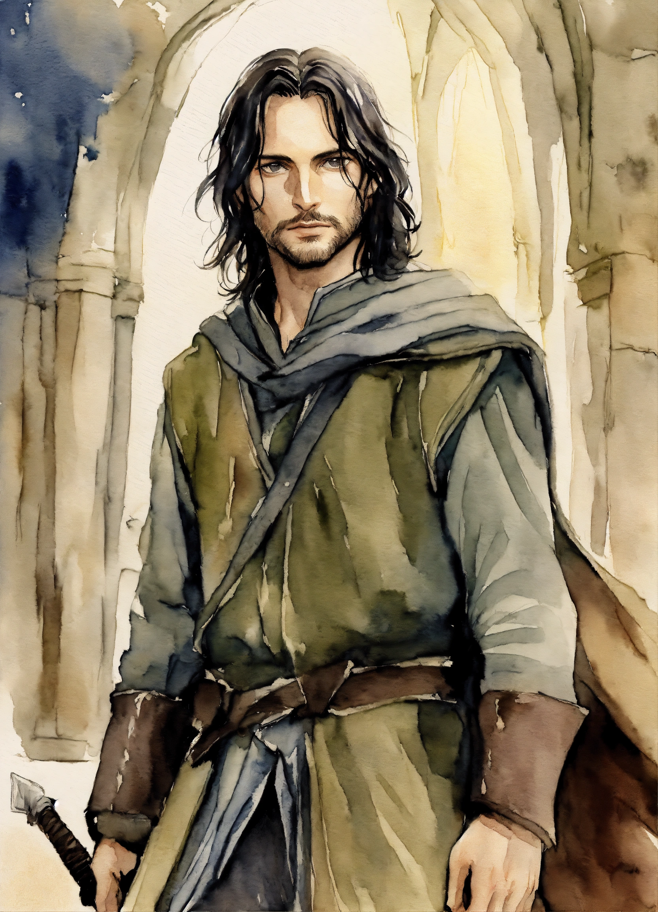

Kim jest?
Aragorn, znany również jako Obieżyświat, to jedna z najważniejszych postaci w Władcy Pierścieni J.R.R. Tolkiena. Jest potomkiem królów Númenoru i prawowitym dziedzicem tronu Gondoru. Jego życie, pełne wyzwań, poświęcenia i heroizmu, czyni go jednym z najpotężniejszych i najbardziej inspirujących bohaterów Śródziemia. Aragorn został wychowany przez elfy w Rivendell pod opieką Elronda. Jako młodzieniec dowiedział się o swoim królewskim dziedzictwie, jednak początkowo nie dążył do objęcia tronu Gondoru. Zamiast tego wybrał życie Strażnika – samotnego wędrowca, który chronił ludzi Śródziemia przed niebezpieczeństwami. Był znany jako Obieżyświat i działał w cieniu, pomagając innym, jednocześnie unikając rozgłosu. Podczas wydarzeń związanych z Drużyną Pierścienia Aragorn okazał się niezwykłym przywódcą i wojownikiem. Był nie tylko mistrzem miecza i doskonałym strategiem, ale również osobą pełną empatii i determinacji. Po śmierci Boromira przejął odpowiedzialność za ochronę pozostałych członków Drużyny, zwłaszcza hobbitów, oraz za kontynuowanie misji zjednoczenia sił Gondoru i Rohanu. Jednym z najważniejszych momentów w historii Aragorna było objęcie swojej prawdziwej roli jako króla. Aby zjednoczyć ludzi przeciwko Sauronowi, Aragorn wkroczył na Ścieżkę Umarłych, gdzie wypełnił starożytną przysięgę, przywołując armię Umarłych do walki o Gondor. Jego odwaga i przywództwo podczas bitwy na Polach Pelennoru oraz późniejsze odwrócenie uwagi Saurona w bitwie pod Czarną Bramą odegrały kluczową rolę w zwycięstwie nad siłami Mordoru. Po zniszczeniu Jedynego Pierścienia i pokonaniu Saurona Aragorn został koronowany na króla Elessara Telcontara, przywracając linię królewską Gondoru i Arnoru. Jego panowanie było czasem pokoju i odbudowy Śródziemia. Aragorn poślubił Arwenę, córkę Elronda, co symbolizowało jedność ludzi i elfów.